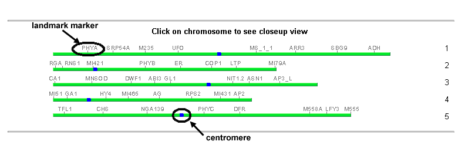
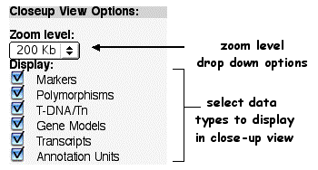
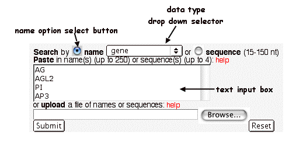
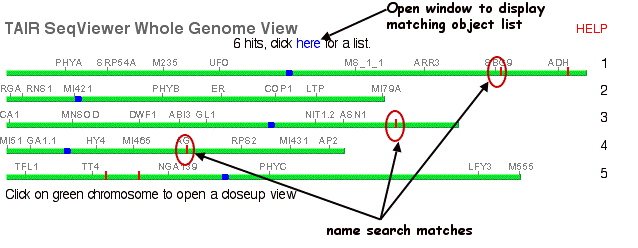
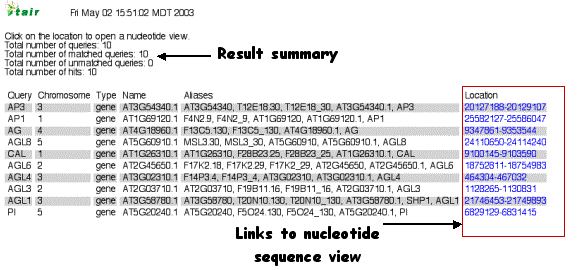
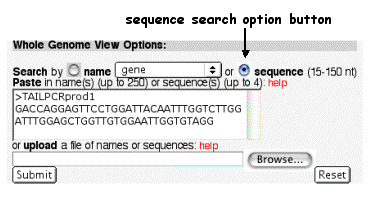
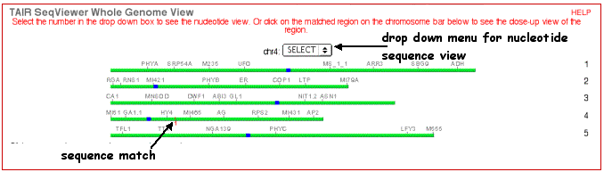

SeqViewer Search Page
The SeqViewer search page displays a clickable view of the whole Arabidopsis genome at the top and tools for searching and customizing closeup views below.
Whole Genome View
Closeup View Controls
Search Functions
Search by Name
Name Search Summary Page
Search by Sequence
Whole Genome View
Each of the five nuclear chromosomes is displayed as a green chromosome bar. Landmark markers used for orientation are indicated in grey. Centromeres are incidcated in blue.
The whole genome view allows you to browse a region of the genome. Click anywhere on one of the green chromosome bars to open a closeup window centered on the selected region.

Closeup View Controls

The Closeup View controls allow the zoom level and map bands of closeup views to be customized before a closeup view is opened. Use the drop-down menu to choose the desired zoom level and put check marks by the data types desired in the closeup view. After choosing the zoom level and data types, click on a chromosome in the whole genome view at the top to open a closeup view. If you perform a search, the default settings will be used. Click on the red tick mark representing your query result to open a closeup view.
Search Tools
Below the five chromosomes is the whole genome view options box where you can search for a variety of features. Two buttons allow you to search by name or sequence. You can either input your text directly or upload a text file from your computer.
Search by Name
To search for an object such as a marker, gene or clone by name: Make sure the "name" button is selected, then choose an object type from the drop-down menu. Enter the name in the search term input box, and click on the Search button. Names can include wild cards (asterisks that will match any character).For example "phy*" would find all genes starting with phy (e.g. phyA, phyB) or "*ap*" would find all genes containing ap (e.g. ap1, ap2, gap2, rap1). To search with multiple names (of the same data type) either input each name on a new line or upload a file containing a list of names. Up to 250 names can be searched at one time.
Search results will be displayed as vertical red bars on the whole genome view at the top of the page. Clicking on the chromosome near the hit will open a closeup view displaying the hit as a name highlighted in yellow.

Name Results Summary Page
When you search by name the number of hits is displayed in the whole genome view along with the vertical bars on the chromosomes. Clicking on the results opens a window displaying a list of all of the matched items. Clicking on the coordinates in the Location row will open a Nucleotide Sequence View centered on the object of interest.

Search by Sequence Match
The Sequence Search box can be used to search for up to four 15-150 nt sequences. For example, this search can be used to find all matches to a pair of PCR primers and display the primer matches as highlighted areas on a nucleotide sequence page. Sequences must be in raw, fasta (for one sequence) or multifasta (for two to four sequences) format.
Fasta format:
>my primer
agaagaagataacaactcaacacRaw format:
agaagaagataacaactcaacacMultifasta format:
>primer 1
agaagaagataacaactcaacac
>primer 2
tgggtatgcaacataatcagaagTo search for a sequence, click on the "sequence" button, paste the query sequence into the box and click on the Submit button.

Sequence search results will be displayed as vertical red bars on the whole genome view at the top of the page and also as numbers in a drop-down menu for each chromosome that had a sequence match. Clicking on one of the red bars on the genome view will open a closeup view containing a new band showing the query location in red. Selecting one of the numbers from the drop-down menu will open a new window containing a nucleotide view with the matching nucleotides highlighted in red.
